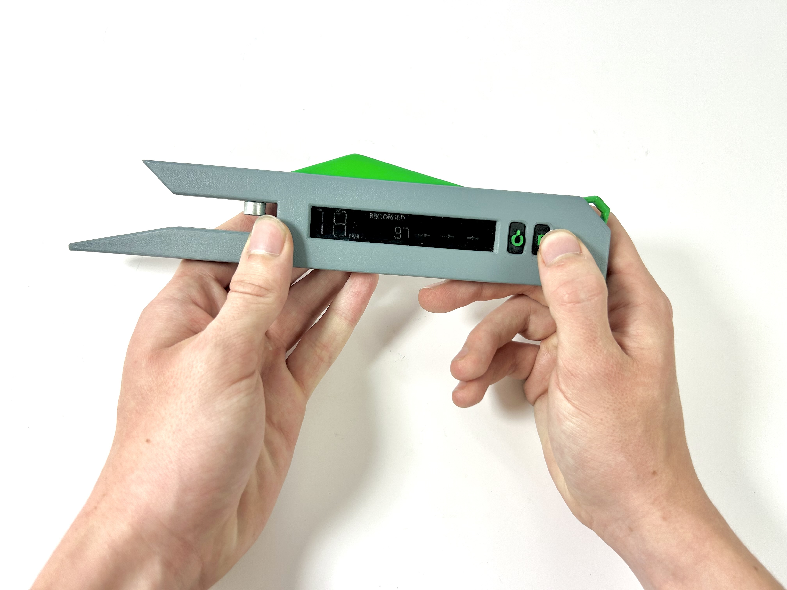
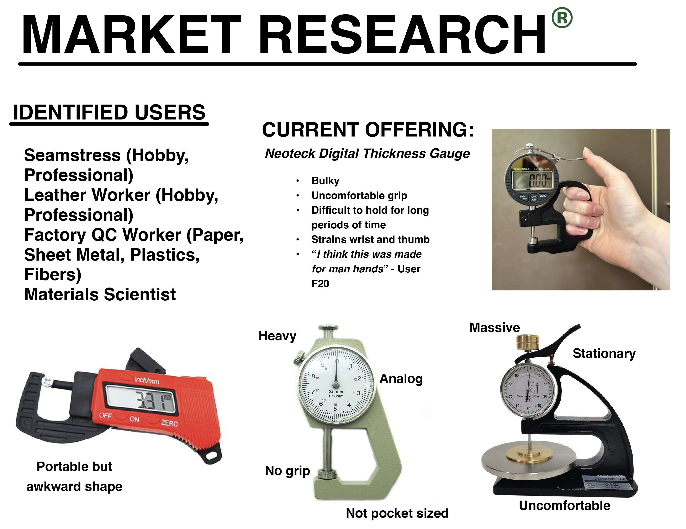
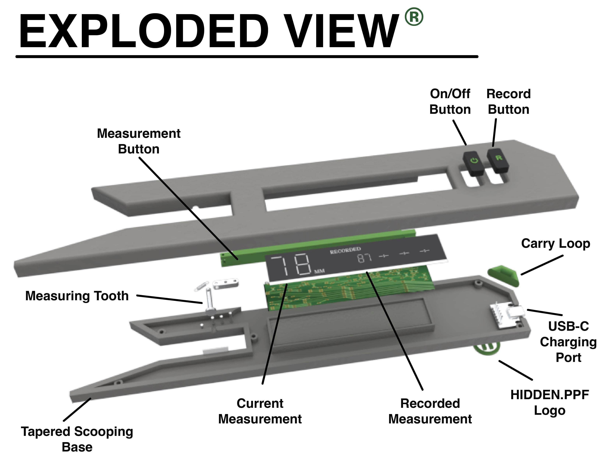
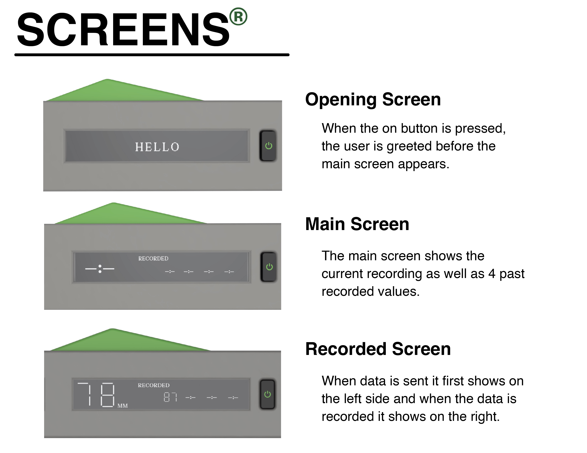
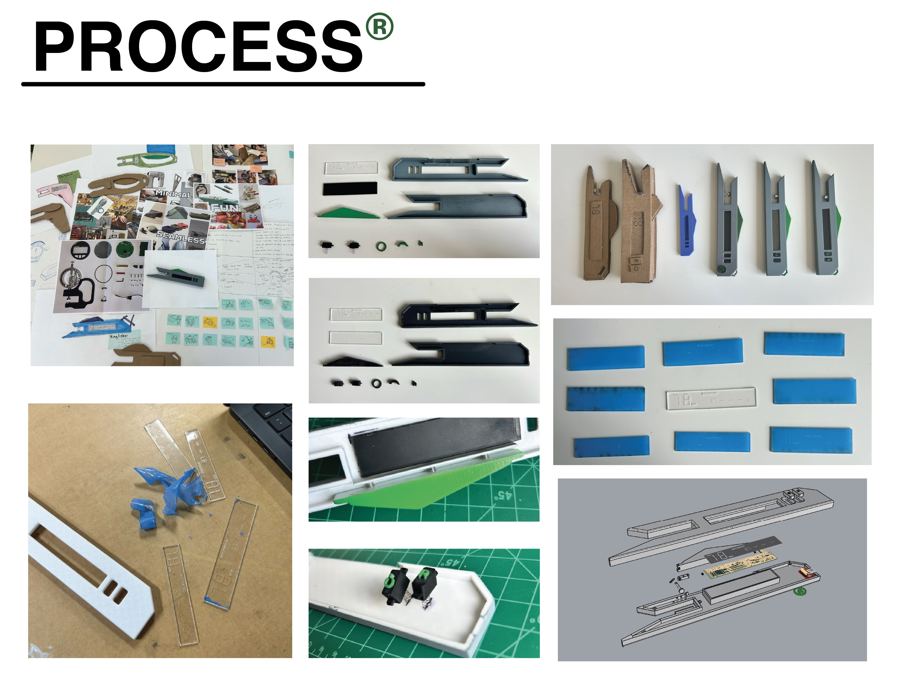
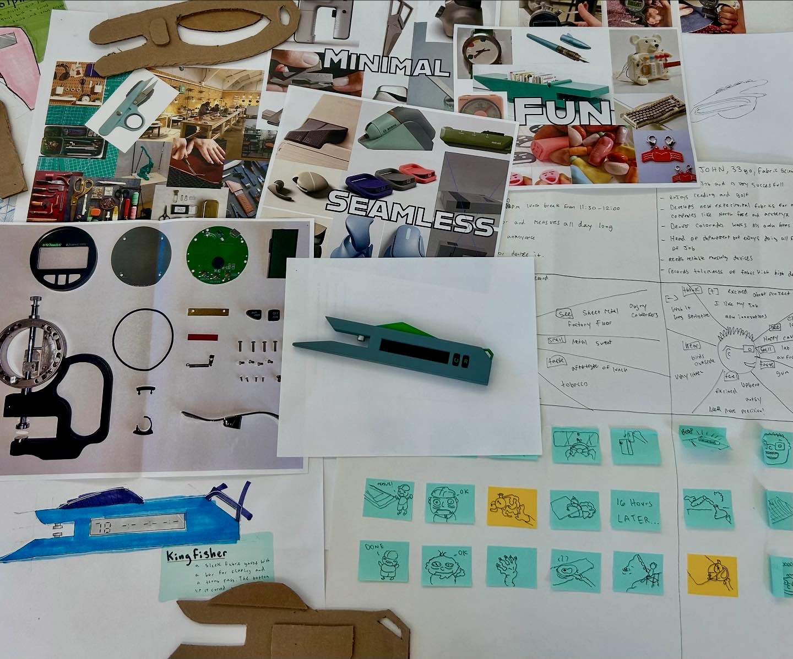

Overview
This project came out of a studio focused on measuring devices. The brief was to design a digital thickness gauge for Hidden, a precision tools brand. The existing options on the market are either too bulky and industrial for a maker context, or too cheap and awkward to use comfortably over long periods. User research confirmed the gap one tester described the leading competitor as feeling like it was "made for man hands."
The Fabric Gauge is designed to be held naturally in one hand, slipped over fabric to get an instant reading, and used repeatedly without straining the wrist. The tapered scooping base guides fabric in, a single measuring tooth registers the thickness, and the reading shows instantly on the LCD display. A record button saves the measurement for later reference.


Design and Features
The form is low and flat, designed to be held like a stapler rather than gripped like a traditional gauge. The tapered scooping base makes it easy to slide under fabric without lifting the whole piece. The measuring tooth sits at the front and registers thickness as soon as the device closes around the material.
The interface is minimal: an LCD display shows the current measurement in millimeters on the left side and up to four recorded values on the right. Two buttons on the top handle on/off and record. A carry loop on the right end lets it hang from a hook or a belt loop, and a USB-C port charges the internal battery.



Components

